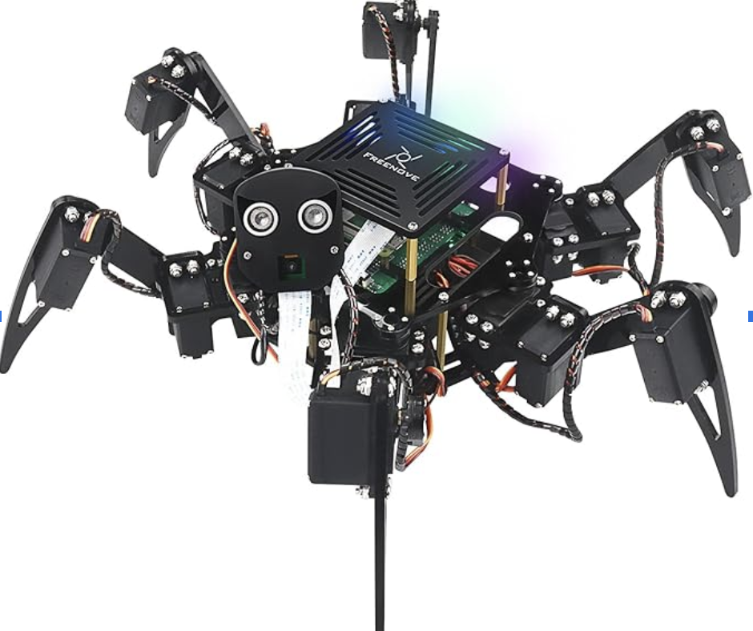
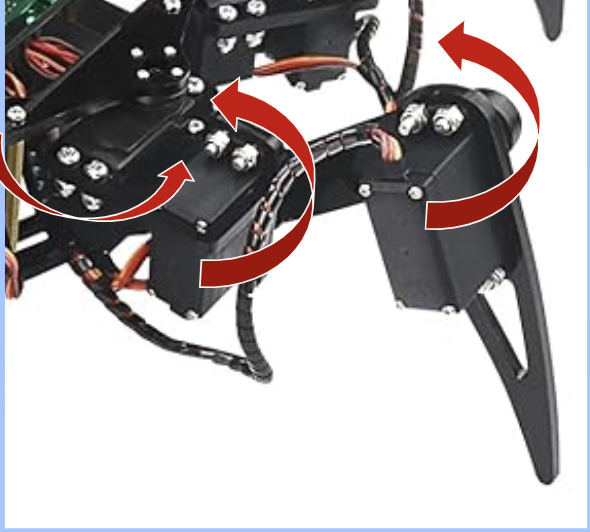
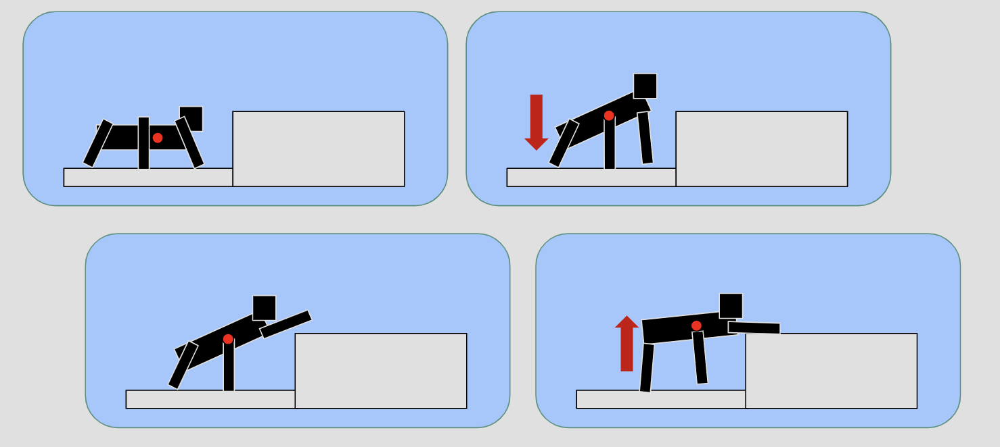
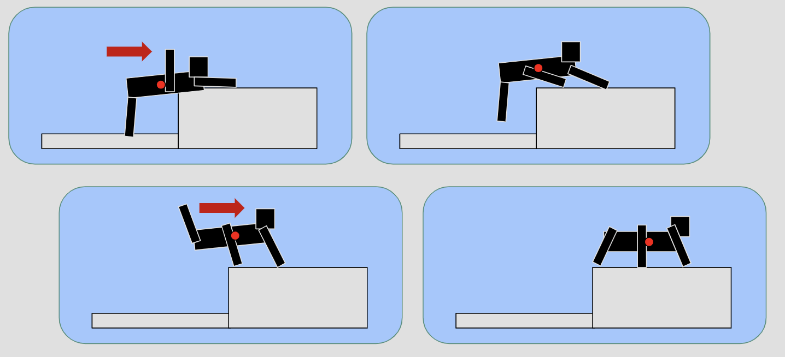

Imagine a small robotic companion that scuttles around your living room, follows you playfully, reacts to your hand gestures, and even climbs stairs to greet you. This project explores the idea of turning a traditional hexapod into an intelligent, friendly home pet — one that doesn't need feeding, doesn't shed hair, and is easy to clean up after.
The goal of this project is to build off from Freenove Hexapod and extends its capabilities by building additional layers of functionality to make it more suitable as a home pet. These fall into two broad categories: low-level control, such as balancing, walking, and stair climbing, and high-level recognition and automation, such as detecting humans and interpreting gestures. Together, they make the hexapod more than just a robot — they create a responsive and semi-intelligent companion that interacts naturally with people in their home.

A cute hexapod.The hexapod uses a total of 18 servos — three per limb — allowing precise control over each joint in all six legs. Every limb tip's position is computed in relative (X, Y, Z) coordinates with respect to the robot's body center. This allow us to apply inverse kinematics to place the legs exactly where we want them.
The robot moves by carefully alternating which legs are lifted and which remain grounded for stability. For instance, a tripod gait leaves three legs down while the others reposition. Variants using four or even five grounded legs offer more stability at the cost of speed. All of this movement is handled through fine-grained servo control and synchronized timing.

Servos on each leg.Climbing stairs is no small feat for a hexapod of this size. Existing hexapod stair climbings such as this, this, or this are either larger robots, or those with widespread weight distribution. The Freenove hexapod faces unique challenges, including shorter than the stair (making it more like cliff climbing), has more cluttered weight allocation, and tiny foot tips that limit grip.
To overcome these constraints, we developed a specialized sequence of movements that shift the robot's center of mass upward and forward in stages. The climbing behavior mimics cliff-scaling rather than smooth stair stepping. Each movement must ensure balance while lifting the body up a step — an action that requires lifting nearly the entire weight using just a few small servos. We also utilized the robot body as a point of support when we center of mass reaches to the top of the stair.


An Illustration of Stair Climbing Stages.Here's the demo of the robot climbing a platform. This mimics a stair of 15cm height. Comparing to an actual stair, this platform is actually more challenging as it is hollow at the bottom and the hexapod's legs might be constrained underneath.
The ending position is not exactly the same due to the width constrains of the platform, but simply moving the hexapod forward would achieve the final stage.
A key part of making the hexapod feel alive and responsive is allowing it to interpret human gestures. Building off from the functionalities provided from MediaPipe and OpenCV, the hexapod receives a live video stream from a camera, which is processed on a connected client. When a recognized gesture is detected, the client sends the corresponding command back to the robot.
Three main gestures have been implemented:These simple, intuitive motions let users interact with the robot naturally, without needing a controller or app.
To further increase interactivity, we implemented a human-following behavior. This begins with MediaPipe's face detection model, which identifies the position and size of a face in the camera feed. Using the width of the detected face, along with a pre-calibrated focal length, we estimate the person's distance from the robot, and cross-validate the value using the onboard ultrasonic sensor. We then compute the horizontal and vertical angles to the face using trigonometric functions (specifically, the arctangent of the offset divided by depth). These angles determine how the robot should rotate: the head adjusts first to maintain gaze, but if the face moves beyond the head's range of motion, the robot's body also rotates to realign its posture.
This mechanism can work in tandem with gesture recognition, allowing the hexapod to focus on one person while responding to their commands. The responsiveness helps form the illusion of a pet paying attention and reacting accordingly.
This project demonstrates how to transform a commercially available hexapod platform into a home companion, through a mix of mechanical control and computer vision. With smooth gait movement, stair climbing, gesture recognition, and human figure tracking, we've made progress toward making it an affordable, low-maintenance robotic pet, that can moves, reacts and engages with people in natural ways.
Big thanks to Professor Chris Atkeson for funding the entire project and providing valuable insights along the way, making controlling the robot and transforming it into the what I'm envisioning possible.